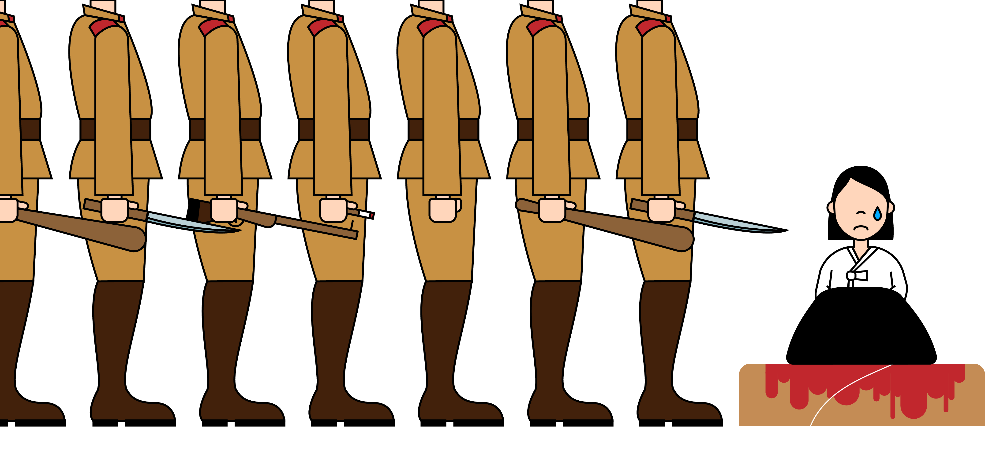

I’m Minji Kim.
I was born on 1923 in Jinju, Korea.
I live in Korea with my parents and little sister.
One day, people came to me and asked work with them.
They said, I can earn a good monthly income and they will give rice.
Everyday, sturggling with violence, cruelty, fear, and sadness, I dealt with about 60 - 70 person of Japanese soldiers.

During most of my friends passed away at Japan, I returend alive from there.
But, if no one apologise to me and us, who recompense our passed youth, and life?